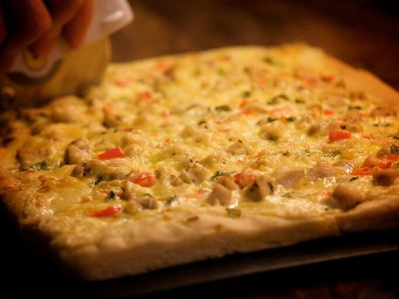
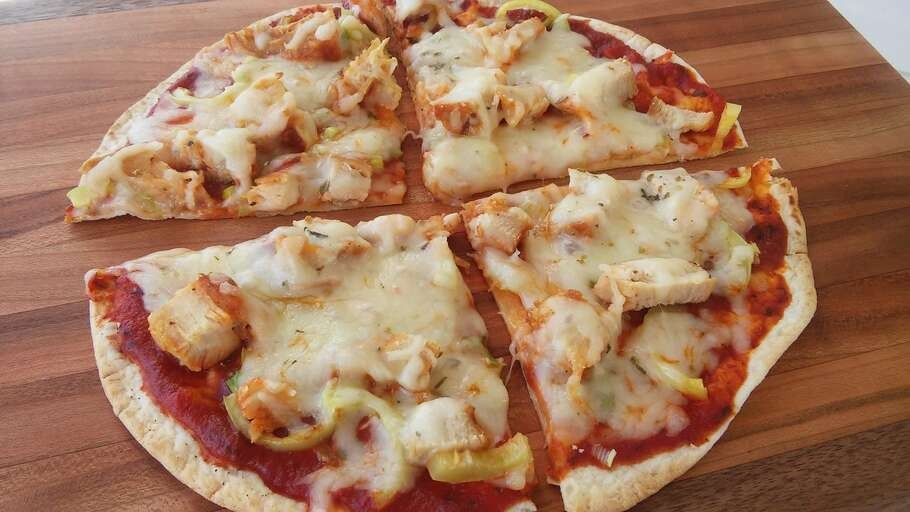
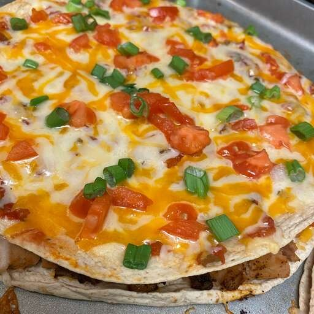

Chicken Alfredo Pizza
This Alfredo pizza recipe combines two of my favorites: chicken and pizza.

Easy Tortilla Pizza
This tortilla pizza is extremely easy to make. It is light enough to be a snack, serves well as an appetizer, or is so good that it can be devoured alone! You can use any sort of topping variation. The one below is the classic way I usually prepare it but feel free to experiment.

Mexican Pizza
This Mexican pizza recipe layers my specially seasoned ground beef and refried beans between two crisp tortillas. Top with salsa, cheese, tomatoes, and jalapeño for incredible flavor in every bite!

Pesto Pizza
Pesto pizza is a great alternative to your regular pizza.